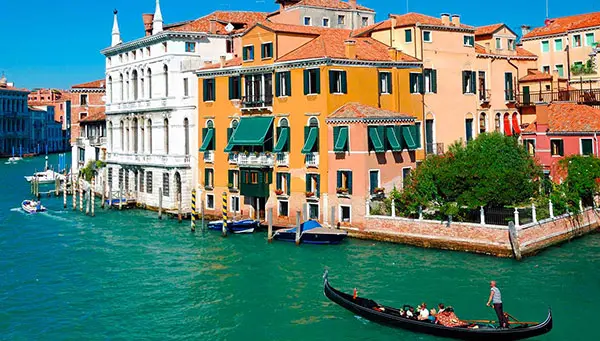
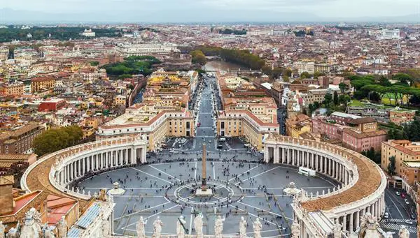

Bem-vindo a EuroTour
Destinos:
Veneza
Pela manhã, traslado em barco até a região da Praça de São Marcos de Veneza, cidade situada sobre um grupo de mais de 100 pequenas ilhas ligadas por pontes e conheceremos caminhando com guia local os arredores da Praça de São Marcos, Basílica, Campanille da cidade dos canais. Tempo livre. À tarde, sugere-se um passeio opcional em gôndola.
Roma
Faremos uma visita panorâmica durante a qual você receberá uma introdução sobre a cidade eterna. Finalizaremos em SÃO PEDRO DO VATICANO. Você poderá conhecer a basílica e os museus. À noite faremos um Traslado ao Trastévere, um animado bairro da cidade conhecido por seus típicos e pequenos restaurantes.
Costa Azul

Tempo livre para passear em NICE, capital da Costa Azul com o Passeio dos Ingleses e a Praça Massenae (em ocasiões o tempo livre em Nice se oferece na chegada no dia anterior, saindo de manhã diretamente a Arles) . Posteriormente, saída rumo a ARLES, a cidade no coração da Provença que inspirou tantas das pinturas de Van Gogh. Suas impressionantes ruínas romanos atestam a importância desta cidade na época.
Sobre nós
EuroTour é um site que ajuda você a planejar sua viagem para a Europa, desde a compra das passagens, até a visita dos pontos turisticos mais importantes de cada região!